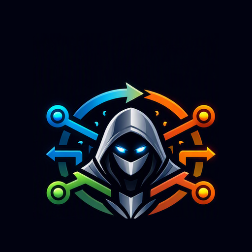

AI ROUTERTwo separate steps: connecting GitHub OAuth below only grants access - it doesn't pick a repo. Then either tap "Browse your repos" and pick one (connects it right away), or type an owner/name and tap Save. Once both are done, coding/debugging requests default to that repo unless you clearly ask about some other code. Every write commits directly to it, but you'll be asked to approve each one before it happens.
No memories yet. Add one below, or approve a suggestion the AI offers during a chat.
No saved documents yet. Files you upload in chat are saved here automatically.
Each profile keeps its own chats, memories, prompts, projects, and Google Drive connection - tap one to switch, all on this device. Good for separating Work from Personal.